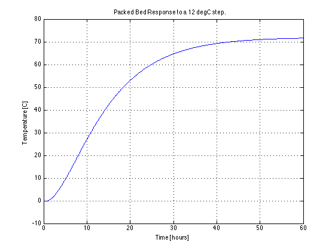
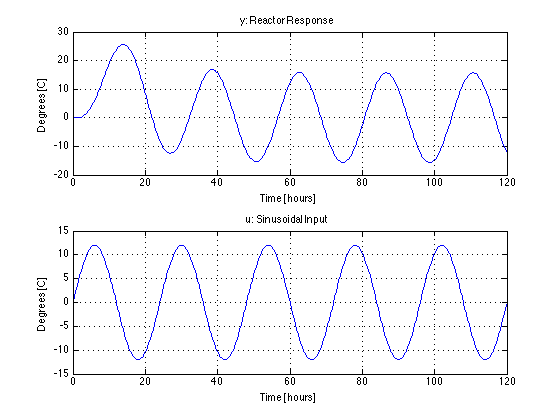
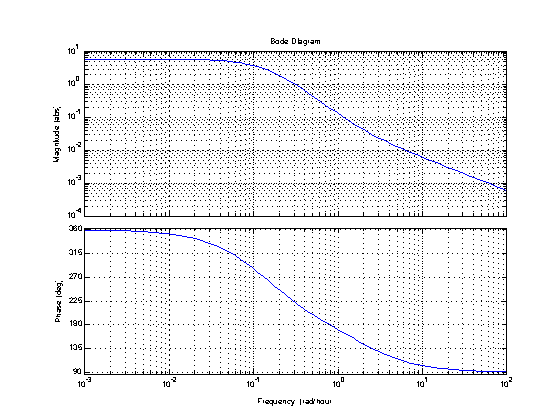
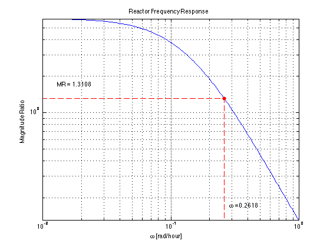
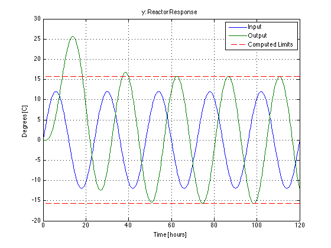

Problem 6.17
File: Ch06_P17.m
Do step test simulation using matlab, with a step of magnitude 12 degrees C. For the question about sinusoidal response, use a Bode plot to compute the maximum variation for a sinusoidal input with a period of 24 hours and amplitude of 12 degrees C.
-------------------------- SOLUTION --------------------------
Step 1. Perform a 12 deg step test.
G = tf(3*[-1 2],conv([10 1],[5 1]),'TimeUnit','hours'); t = 0:.1:60; y = 12*step(G,t); plot(t,y); xlabel('Time [hours]'); ylabel('Temperature [C]'); title('Packed Bed Response to a 12 degC step.'); grid;
Step 2. Response to a sinusoidal input with a 24 hour period, and a 12 deg amplitude.
[u,t] = gensig('sin',24); u = 12*u; y = lsim(G,u,t); subplot(2,1,1); plot(t,y); xlabel('Time [hours]'); ylabel('Degrees [C]'); title('y: Reactor Response'); grid subplot(2,1,2); plot(t,u); xlabel('Time [hours]'); ylabel('Degrees [C]'); title('u: Sinusoidal Input'); grid
Step 3. Bode Plot
p = bodeoptions; p.MagUnits = 'abs'; p.MagScale = 'log'; p.FreqUnits = 'rad/hour'; clf; bodeplot(G,p); grid
Step 4. Compute Magnitude Ratio (i.e., Gain) as a function of frequencies. Then compute the Magnitude Ratio specifically for a frequency of one cycle per day, which is 2*pi/24 rad/hour.
w = logspace(-2,0,200); mag = bode(G,w); mag = reshape(mag,length(w),1); clf loglog(w,mag); xlabel('\omega [rad/hour]'); ylabel('Magnitude Ratio'); title('Reactor Frequency Response'); grid w = 2*pi/24; mag = bode(G,w); hold on; loglog(w,mag,'r.','Markersize',20) ax = axis; loglog([w w ax(1)],[ax(3) mag mag],'r--'); text(1.1*w,1.3*ax(3),['\omega =',num2str(w)]) text(1.3*ax(1),1.3*mag,['MR = ',num2str(mag)]); hold off; displaytable(12*mag,'Amplitude of Reactor Response = ');
Amplitude of Reactor Response = 15.73
[u,t] = gensig('sin',24); u = 12*u; y = lsim(G,u,t); clf; plot(t,u,t,y); xlabel('Time [hours]'); ylabel('Degrees [C]'); title('y: Reactor Response'); grid ax = axis; hold on; plot([ax(1) ax(2)],mag*12*[1 1],'r--'); plot([ax(1) ax(2)],-mag*12*[1 1],'r--'); hold off legend('Input','Output','Computed Limits');